ggplot()10 Introduction to Data Visualisation
Data visualisation is a powerful tool for transforming complex datasets into clear and insightful graphical representations. It plays a central role in Exploratory Data Analysis (EDA), helping to reveal important patterns, trends, and hidden insights that are often obscured in raw data. The information contained within data highlights important patterns and trends, and uncover hidden insights that might not be apparent from raw data alone. In the context of health metrics and infectious diseases, data visualisation plays a critical role in tracking disease outbreaks, understanding health trends, and communicating findings to policymakers and the public.
We have already seen how to create various types of plots using the {ggplot2} package. In this chapter, we will discuss the history and evolution of data visualisation, delve deeper into the topic, introducing the concept of the Grammar of Graphics, exploring techniques for customising plots, adding annotations, labels, and themes, and creating interactive visualisations.
10.1 History of Data Visualisation
The history of data visualisation spans centuries. The roots of data visualisation can be traced back to ancient times with rudimentary visual representations, but its modern form began to take shape with the growth of statistics and graphical methods in the 17th and 18th centuries. One notable milestone was the publication of William Playfair’s “Commercial and Political Atlas”1 in 1786, which introduced innovative graphical techniques like the line graph, bar chart, and pie chart.
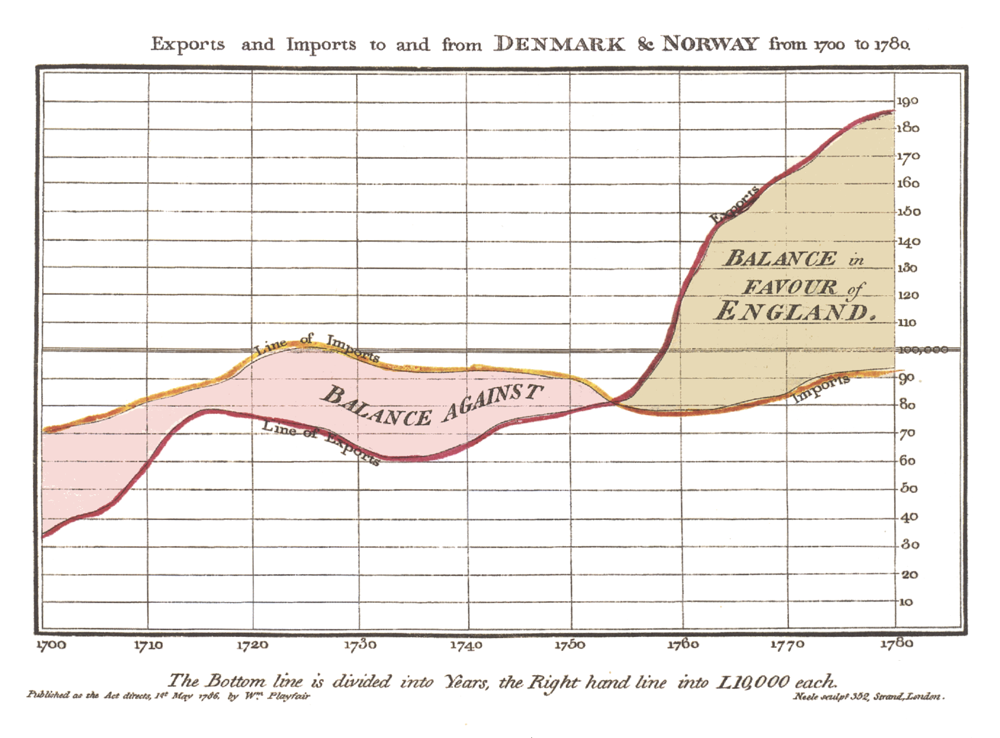
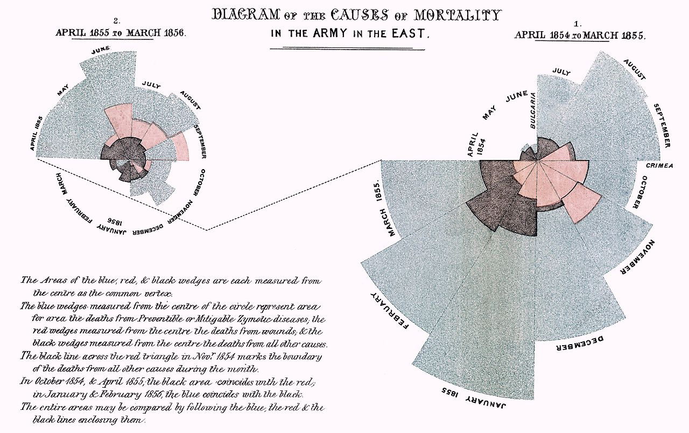
Throughout the 19th and 20th centuries, pioneers such as Florence Nightingale (1820-1910), John Snow (1813-1858), and Jacques Bertin further advanced the field, using visualisations to communicate complex data and uncover insights with his Semiology of Graphics - 1967.
Data visualisation was largely done manually or with the help of basic plotting tools. One example are the hand-drown visualisations made by W.E.B. Du Bois (1868-1963) in the early 20th century to illustrate the social and economic conditions of African Americans in the United States. These visualisations are now considered iconic examples of data visualisation and have been widely studied and digitally reproduced.
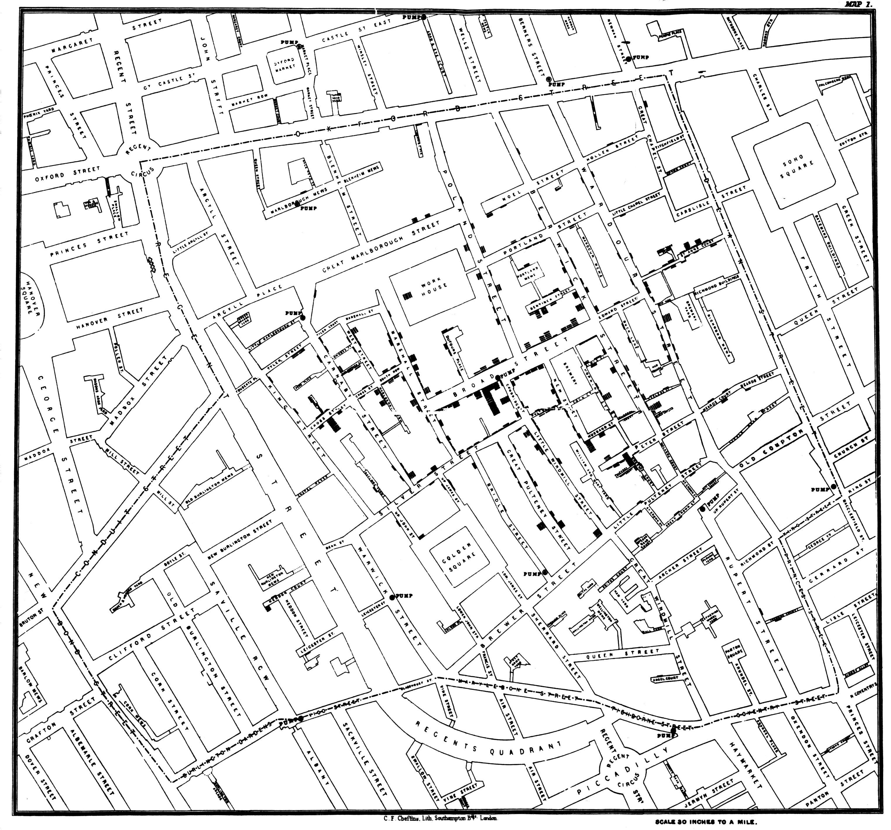
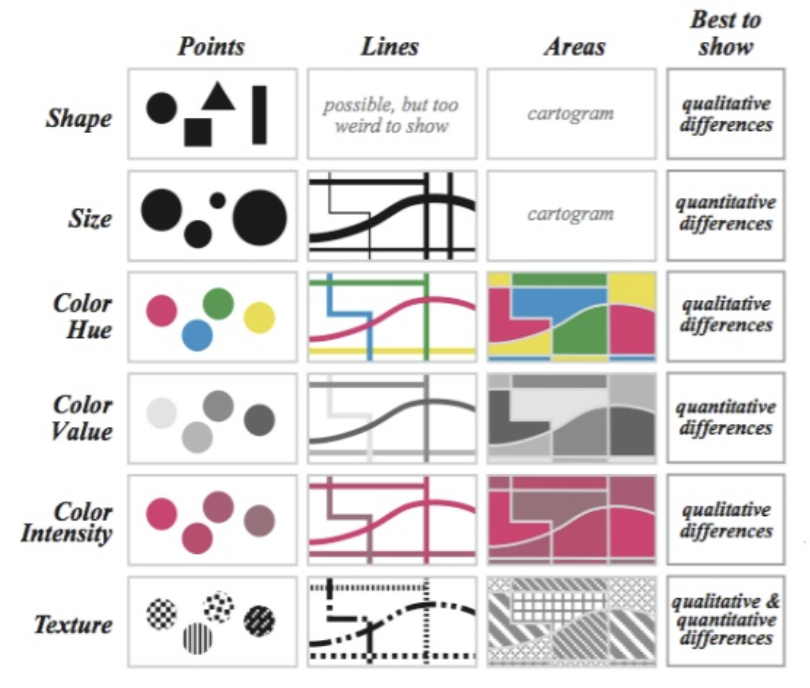
The Digital Revolution
The digital revolution of the late 20th century, with the advent of powerful computing technologies, enabled the creation of interactive and dynamic visualisations. Early programming languages like Fortran and BASIC were used to create simple plots, then the development of specialised software like SAS and SPSS provided more robust tools for data analysis and visualisation.
The emergence of the internet and web technologies in the 1990s led to the introduction of more sophisticated statistical software and programming environments. Tools like R, Python, and JavaScript, along with libraries like ggplot2, matplotlib, and D3.js, revolutionised the field of data visualisation, making it more accessible and powerful.
In summary, data visualisation plays a crucial role in fields like data science, business analytics, scientific research, journalism, and public policy. It serves as a potent tool for communicating data while visualising patterns, trends, and relationships that might not be apparent from raw data alone. For instance, in public health, tracking disease outbreaks in real time, such as with COVID19, tools like dashboards and interactive maps are used extensively to monitor the spread of the virus and communicate the effectiveness of interventions.
10.2 The Grammar of Graphics
One of the fundamental concepts in modern data visualisation is the Grammar of Graphics, which provides a structured approach to creating visualisations layer by layer. This concept is clearly interpreted in tools like the {ggplot2} R package, part of the {tidyverse} ecosystem, developed by Hadley Wickham in 2005.
The Grammar of Graphics allows for the creation of complex visualisations by combining simple building blocks such as data, aesthetics, and geoms (geometric objects) in a structured manner. It provides a flexible framework for customising visualisations and supports the creation of a wide range of plots, from basic scatter plots to intricate multi-layered visualisations.
It starts with the ggplot() function, which initialises the plot. The function takes a data frame as its first argument and then additional arguments to specify the aesthetics of the plot, such as the x and y variables, colour, shape, and size.
The aesthetics are defined using the aes() function, which maps variables in the data frame to visual properties of the plot, such as x and y coordinates, colour, shape, and size. The aes() function is the mapping part of the plot, and it can be called with the mapping argument in the layers of the plot.
ggplot(data = df,
mapping = aes(x = x, y = y, color = z))Data can also be called outside of the ggplot() function.
data %>%
ggplot(aes(x = x, y = y, color = z))And then additional layers are added using functions like geom_point() for a scatterplot, or geom_line() for a line plot, and so on. Then, with the labs() function, we can add titles, labels, and captions to the plot.
ggplot(data = df, aes(x = x, y = y, color = z))+
geom_point()+
labs(title = "Scatter Plot")The {ggplot2} package provides a wide range of geoms, scales, and themes to customise the appearance of the plot. By combining these elements, you can create visually appealing and informative visualisations that effectively communicate your data.
It allows the user to create complex visualisations by combining simple building blocks, with each layer of the plot allowing for an aesthetic mapping of data to visual properties, such as colour, fill, shape, and size, making it easy to create a wide range of visualisations, or even new data. In this example there is also the use of an alternative to the labs() function with the ggtitle() function, which differs in the way the title is placed in the plot.
ggplot(data = df, aes(x = x, y = y, color = z))+
geom_point()+
geom_point(data = df2, aes(x = x2, y = y2, color = z2))+
ggtitle("Scatter Plot")In addition to functions provided by {ggplot2}, there are ggplot extensions, other functions and packages that can be used to create visualisations, such as {plotly}, {ggplotly}, {leaflet}, {tmap}, and {shiny}. These tools provide additional functionality for creating interactive plots, maps, and dashboards, allowing for more engaging and dynamic data visualisations.
10.3 General Guidelines for Data Visualisation
There are many types of plots that can be used to visualise different types of data, such as cross tabulations for categorical variables, scatter plots for continuous variables, side-by-side box plots, and other summaries.
Here are some specifications about the usage of common types of plots:
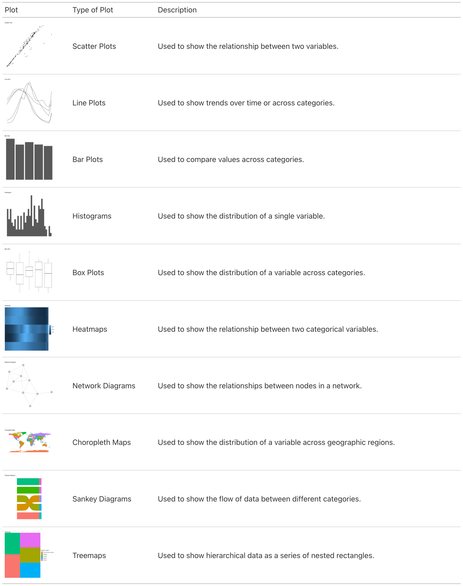
10.4 Example: Visualising Lung Cancer Deaths by Age in Germany
This is an example of visualising lung cancer deaths by age in Germany. It is a line plot showing the number of deaths by age group. We have already seen how to create a line plot using {ggplot2} in previous chapters, the focus here is on customising the plot to make it more visually appealing and informative.
This is a basic output, and we will enhance it by customising patterns, colours, legend, and adjusting the layout. We will also explore how to save the plot as an image file for sharing or publication.
library(ggplot2)
library(ggpattern)
scatterplot <- hmsidwR::germany_lungc |>
ggplot(aes(x = age, y = dx)) +
geom_point(aes(shape =sex)) +
labs(title = "Lung Cancer Deaths by Age in Germany",
x = "Age",
y = "Deaths")
lineplot <- hmsidwR::germany_lungc |>
ggplot(aes(x = age, y = dx, group = sex)) +
geom_line(aes(linetype=sex)) +
geom_point() +
labs(title = "Lung Cancer Deaths by Age in Germany",
x = "Age",
y = "Deaths")
barplot <- hmsidwR::germany_lungc |>
ggplot(aes(x = age, y = dx, group = sex)) +
ggpattern::geom_col_pattern(aes(pattern=sex),
position="stack",
fill= 'white',
colour= 'black') +
labs(title = "Lung Cancer Deaths by Age in Germany",
x = "Age",
y = "Deaths")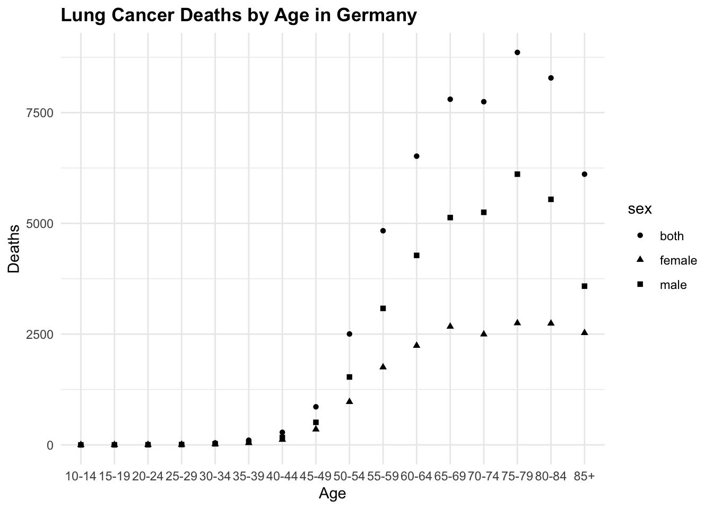
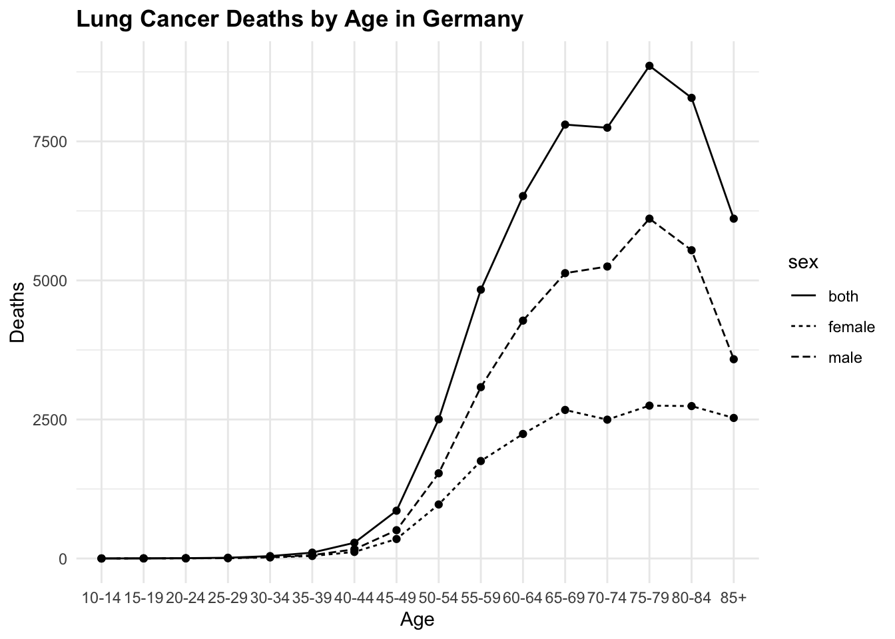
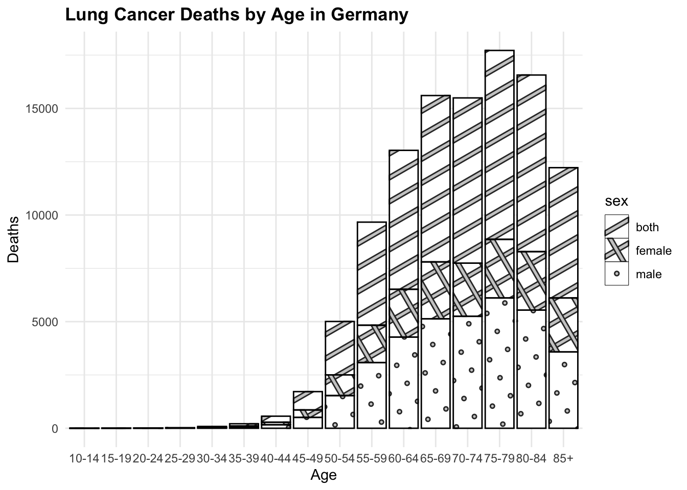
All of these three plots have a grammar of graphic structure, which means that they are built using layers of data, aesthetics, and geometric objects. The ggplot() function initializes the plot, and then we add layers using geom_point(), geom_line(), and geom_col(), (or geom_col_pattern() in this particular example), to create the visualisations. We can further customise these plots by adding titles, labels, and adjusting the appearance of the plot elements.
Finally, another way to visualise Lung Cancer Deaths by Age in Germany is to use the geom_col() function and create a bar plot for each sex category. This is a basic bar plot, and we will enhance it by adjusting the layout. The facet_<> functions are used to create a grid of plots, where each plot represents a different subset of the data. In this case, we are using facet_grid() to create a grid of plots based on the sex variable.
hmsidwR::germany_lungc |>
ggplot(aes(x = age, y = dx, group = sex)) +
geom_col(position="identity",
fill= 'white',
colour= 'black') +
# adjust the layout with three barplot one for each category
facet_grid(sex ~ .) +
labs(title = "Lung Cancer Deaths by Age in Germany",
x = "Age",
y = "Deaths") +
theme(axis.text.x = element_text(angle = 45, hjust = 1))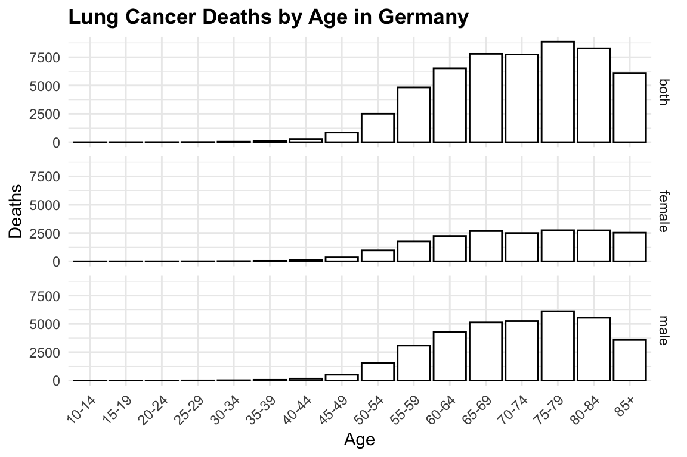
10.4.1 Colors and Patterns
Choosing the right colours for your visualisations is crucial. Colors can highlight important aspects of your data and improve readability. Many tools provide built-in color palettes, but you can also customise your own. Here we just add the scale_color_manual() function to customise the original plot, with a new color palette.
By typing ?scale_color_manual() in the R console, you can access the documentation and explore other options for customising colours using the scale_<..>_<..>() functions.
# Example: customising colours in a bar chart
lineplot +
scale_color_manual(values = c("brown", "navy", "orange"))In addition to colours, patterns can be used to differentiate between the groups in the plot. The {ggpattern} package provides a variety of patterns that can be used to fill the bars in a bar plot. Here we have used the geom_col_pattern() function to add patterns to the bars in the plot. An example is in show in the plot with the barplot. Another way is to use the linetype or shape aesthetics to differentiate between groups in a line plot or scatter plot.
10.4.2 Theme, Legends and Guides
Legends and guides are essential for interpreting visualisations. They help the audience understand what different colours, shapes, or sizes represent in the plot. Here we have just changed the title of the legend, but much more can be done, such as changing the position, and labels. To change the position of the legend we can use the theme() function as shown below.
In the R console, typing ?theme() will provide more information on customising the appearance of your plots. In this case it is useful to adjust the angle of the text in the x-axis, and even this can be done specifying the angle parameter in the theme() function.
The guides() function can be used to customise the legend, such as reversing the order of the legend items.
# Customising a legend to a plot
lineplot1 <- lineplot +
labs(linetype = "Sex",
subtitle = "Year 2019",
caption = "DataSource: hmsidwR::germany_lungc") +
guides(linetype = guide_legend(reverse = TRUE)) +
theme(legend.position = "top",
axis.text.x = element_text(angle = 45, hjust = 1),
plot.title = element_text(hjust = 0.5, face = "bold"))
lineplot2 <- lineplot1 +
scale_y_log10() +
coord_cartesian(clip = "off") +
annotate("text", x = Inf, y=Inf,
hjust = 1, vjust = 0,
label = "Log Scale")10.4.3 Plot Layouts
The layout of your plots can significantly impact their effectiveness. Arranging multiple plots in a grid can help compare different aspects of your data side-by-side. We can use the grid.arrange() function from the {gridExtra} package to arrange multiple plots in a grid layout. Or, we can use the layout() function to specify the layout of the plots. There are other packages that can be used such as {patchwork} and {cowplot}, which provide additional functionalities for arranging plots.
# Example: Arranging multiple plots
library(gridExtra)
grid.arrange(lineplot, lineplot1, lineplot2, ncol = 3)
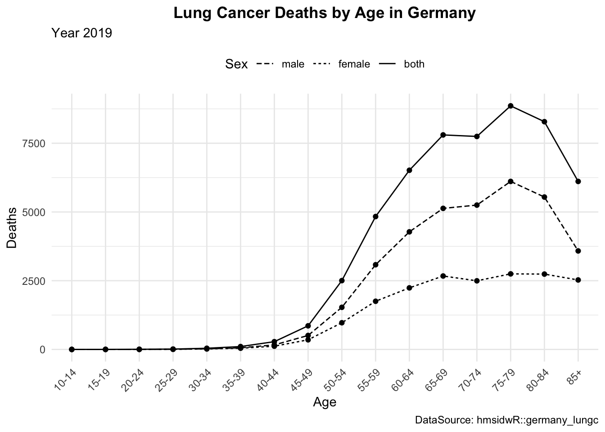
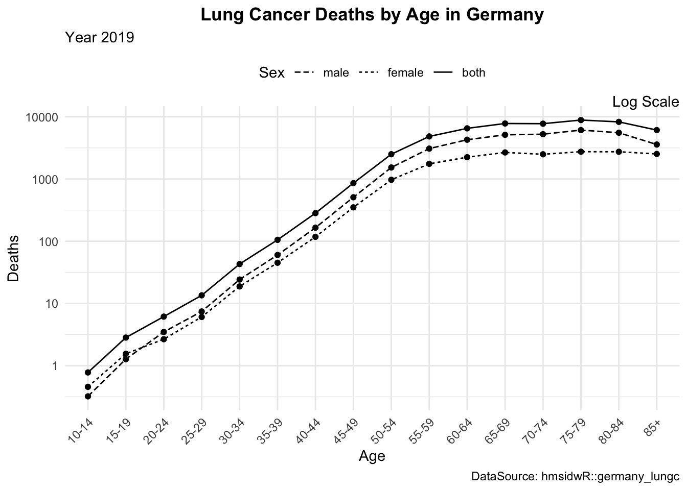
10.4.3.1 Exercise
Replicate the plots above, customizing the legend and axis text to improve readability. Apply a logarithmic scale to the y-axis for better data visualization, and consider adding a caption to indicate the data source.
10.4.4 Saving as an Image
Once you’ve created your visualisation, you might want to save it as an image file for sharing or publication.
ggsave("lineplot.png", plot = lineplot2, width = 6, height = 4)10.5 Practising Data Visualisation
To practise making data visualisations, there are numerous free resources available that provide valuable information and opportunities to enhance your skills. By engaging with these platforms, you can practise your abilities, share your final results, and receive feedback from the community. While the feedback may sometimes be critical, it is an essential part of the learning process and will help you improve if you stay persistent.
Participating in competitions and challenges such as #TidyTuesday, #30DayChartChallenge, and #30DayMapChallenge offers a great way to refine your skills. These competitions encourage you to create and share visualisations on various themes, pushing you to experiment with different techniques and styles. By consistently participating in these challenges and actively seeking feedback, you will steadily enhance your proficiency. Over time, you will find yourself becoming more adept and confident in your data visualisation skills.
“William Playfair,” March 9, 2025, https://en.wikipedia.org/w/index.php?title=William_Playfair&oldid=1279573846.↩︎